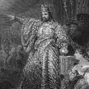

2. Nebukadnezar (MÖ 630-561), İncil’de Kudüs’ü fetheden zalim kral olarak tasvir edilmektedir. İlk Tapınak’ı yıkmış ve Yahudiler’i Babil’e sürmüştür. “Yeremya Kitabı”nda bu dönemde yaşananlar son derece keskin metaforlarla anlatılır: “Babil kralı Nebukadnezar beni mahvetti. Bana eziyet etti. Beni boş bir vazoya döndürdü, bir ejderha gibi yutuverdi beni. Benim etimle karnını doyurdu. Beni sürgüne gönderdi.”

Eski Ahit’teki başlıca kötü karakterlerden biri olan Nebukadnezar, MÖ 598’de Yahudi kralı Jehoiakim’i yenilgiye uğrattığı için Yahudilerin nefretini kazanmıştır. Daha sonra Yahudiliği ortadan kaldırmak için binlerce Yahudi’yi esir almış ve onları kendi başkentine sürgüne göndermiştir. Bu döneme dinler tarihinde “Babil Esareti” adı verilmektedir.
Seküler tarihin Nebukadnezar’a ilişkin yazdıklarında ise farklı nüanslara rastlamak mümkündür. Nebukadnezar’ın Mısır’dan günümüz Türkiye’sine uzanan askeri fetihlerinin yanı sıra Babil’in Asma Bahçeleri’ni yaptırdığına inanılmaktadır. Büyük bir mühendislik becerisi ile yapılan bahçeler antik dünyanın yedi harikası arasında yer almaktadır. Çok büyük ihtimalle Nebukadnezar’ın karısı için bir hediye olarak inşa edilmiştir. Yapay bir sulama sistemi ile birbirlerine bağlanmış basamaklı bahçelerden oluşmaktadır. Bahçeler daha sonra bir depremde hasar görmüş ve geriye hiçbir iz kalmamıştır. Babil Bahçeleri’nin bir zamanlar günümüz Bağdat’ının güneyinde yer aldığı düşünülmektedir.
İncil’deki anlatılar Nebukadnezar’ın ömrünün sonuna doğru aklını yitirdiğini ileri sürer: “İnsanlıktan çıkarak, öküzler gibi ot yemeye başlamıştır. Vücudu çiy taneleri ile ıslanmış, saçları kartal tüyüne dönmüştür. Tırnakları kuşların pençeleri gibi olmuştur.” MÖ 561’de öldüğü tahmin edilmektedir.
Ek Bilgiler
1- Efsaneye göre Nebukadnezar, Babil Bahçeleri’ni bir Med prensesi olan ve memleketindeki bahçe ve ormanların hasretini çeken eşi için inşa ettirmiştir.
2- 1999 yılında gösterime giren Matrix filminde, Morpheus (Laurence Fishburne - 1961) tarafından kullanılan hava taşıtının adı “Nebukadnezar”dır.
3- Nebukadnezar Akadça bir kelime olan Nabu-Kudurri-Usur’dan türemiştir. “Nebo, varislerime göz kulak ol” anlamına gelir. Orta Doğu’da büyük bir yaygınlık kazanmış olmasına rağmen, Akadça MS 1. yy’a gelindiğinde ortadan kalkmıştır.